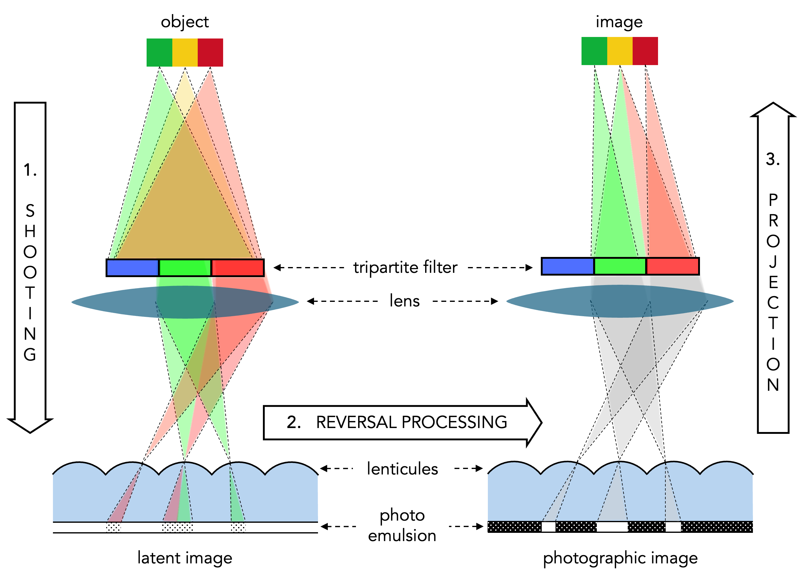
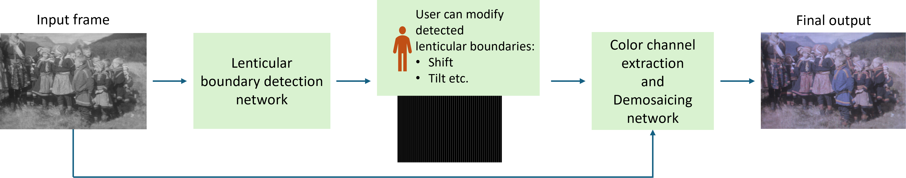
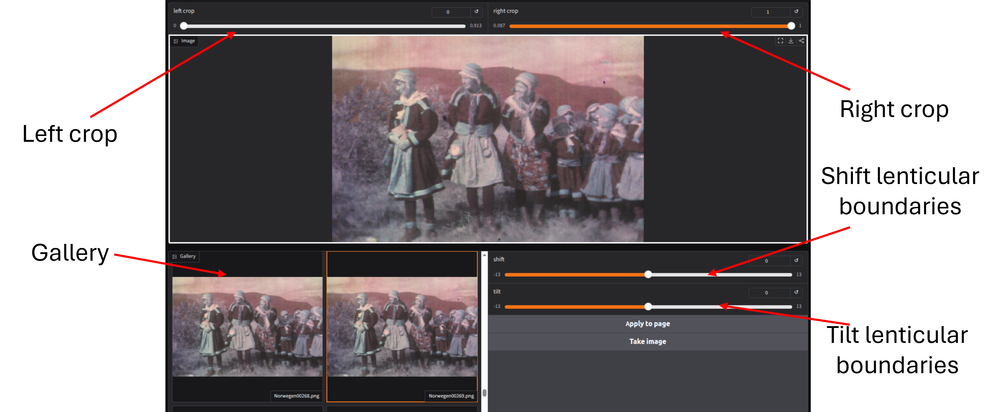
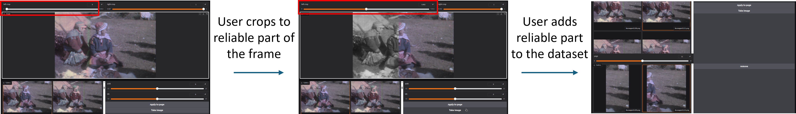
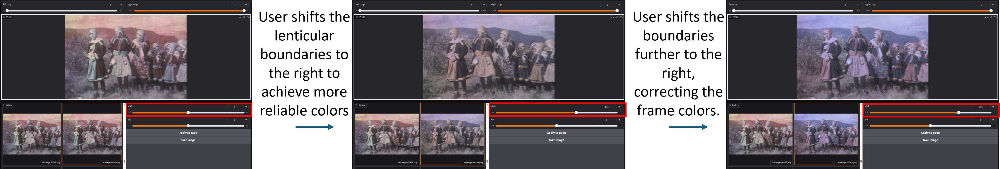
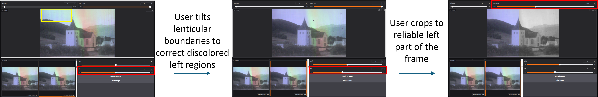
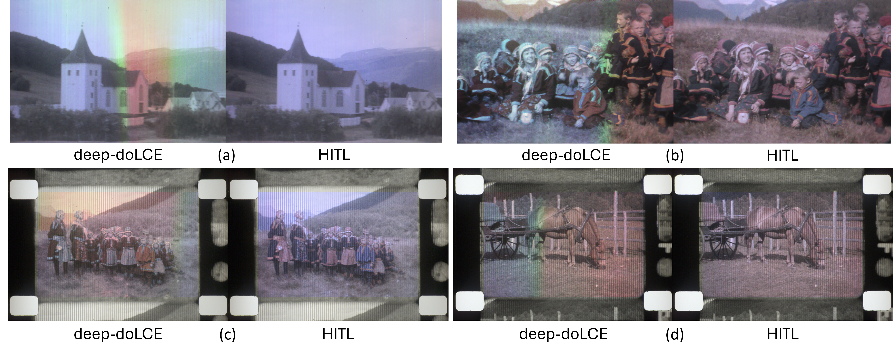
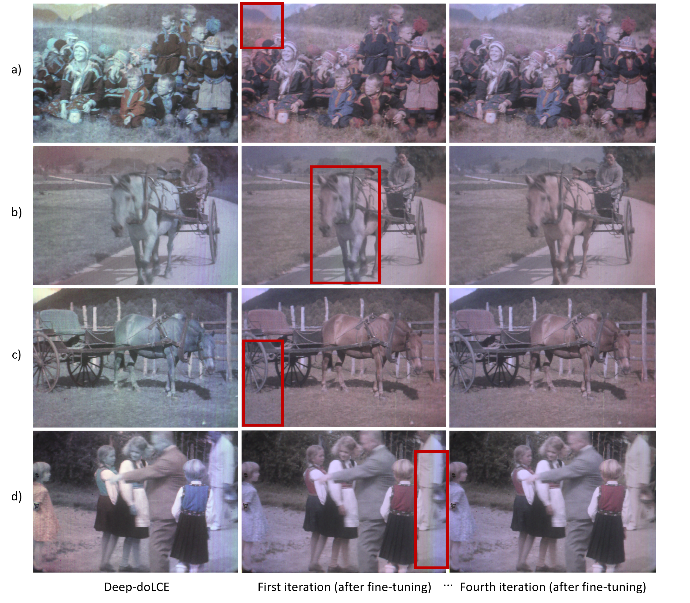
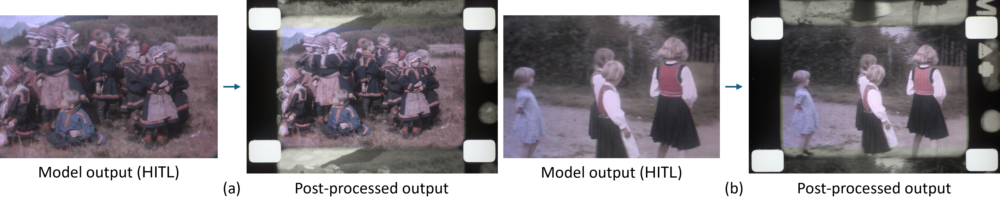
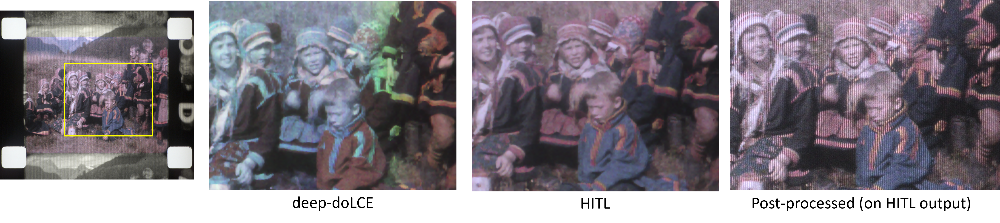

A Human-in-the-Loop Deep Learning Framework for Color Reconstruction of Lenticular Films
Abstract
Historical lenticular films, such as those created with the Kodacolor process, encode color information in a distinctive spatial format. This structure requires specialized techniques for accurate color reconstruction. While recent signal processing approaches like doLCE and deep learning methods like deep-doLCE have advanced automated color recovery, they often fail with cases such as curved lenticules, low-contrast, or badly captured regions.
We propose a human-in-the-loop (HITL) deep learning framework which is designed for color reconstruction in lenticular films. Our approach introduces an editable, vector-based representation of lenticule boundaries, allowing experts to interactively refine boundary positions before color extraction and demosaicing. This decoupled architecture enables targeted corrections and iterative fine-tuning, embedding expert knowledge into the detection model and improving robustness across challenging frames. To preserve image details using information solely present in the original silver emulsion, we merge the reconstructed chrominance with the original film scan's luminance. We evaluate our pipeline on a challenging lenticular film sequence where previous automated approaches fail and the reconstructed colors are not suitable for exhibition. In contrast, our HITL approach successfully produces high-quality, exhibitable color reconstructions with preserved texture. This work is the first to combine expert guidance, editable intermediate representations, and texture-preserving post-processing for lenticular film color reconstruction, advancing the state of the art in this field.
Contributions
- We introduce the first editable representation of lenticule boundaries in a deep learning based lenticular color reconstruction pipeline, allowing flexible expert-driven corrections that are not possible with previous approaches such as deep-doLCE.
- We present a human-in-the-loop (HITL) architecture for lenticular color reconstruction, enabling experts to review, correct, and iteratively improve the detection and colorization process.
- We propose an iterative fine-tuning strategy in which expert-corrected lenticule boundary annotations progressively adapt the detection network to film-specific color reconstruction failures, embedding domain knowledge directly into the model and improving reconstruction quality across the entire sequence.
- We add a texture-preserving post-processing step that merges the reconstructed chrominance with the luminance of the original scan, retaining the authentic grain and detail of the silver emulsion.
Evaluation
Dataset
We evaluate on the historical lenticular film sequence Ein Besuch im Lappenlager ("A visit to a Sami settlement"), filmed by a German amateur filmmaker in 1930 and preserved as part of an archive collection in Stuttgart, Germany. The lenticules are difficult to detect in several areas of the scan, so the fully automatic pipeline failed to reconstruct plausible colors for most frames — making this sequence a natural premiere use case for our HITL method. Since no reliable color ground truth exists, the comparison is based on qualitative visual inspection.
Iterative fine-tuning progression
Expert effort concentrates in the first iteration and decreases in each subsequent round; the process converged within four iterations for this sequence.
| Iteration | Expert operations used | Frames added | Observed outcome |
|---|---|---|---|
| 1 | Shifting, tilting, cropping to reliable ROIs | ≈265 frames (11% of the sequence) | Substantially improved color across all frames; small regions of residual discolorization remain |
| 2 | Mostly cropping, minor shifting in very few cases | — | Model already handles most misalignment cases learned in round 1; no tilting required |
| 3 | Border cropping only | — | High reconstruction quality; only marginal edge artifacts remain |
| 4 | None — frames accepted without corrections | ≈165 frames (7% of the sequence) | Residual artifacts mostly resolved; plausible color throughout the entire sequence |
Qualitative Results

The Kodacolor process. The three stages of lenticular color reproduction — shooting, processing and projection. Color is split by a tri-color filter and recorded as grayscale stripes beneath each cylindrical lenticule embossed on the film surface.

Decoupled architecture. The input frame is first processed by the lenticular boundary detection network, whose output is exposed as an editable boundary layer that the user can shift or tilt before color reconstruction. The refined boundaries are then passed to the color channel extraction and demosaicing network.

Annotation interface. Expert-guided lenticular boundary annotation and color reconstruction verification, with a paged frame gallery, left/right cropping, and shift and tilt controls for the boundary grid.

Crop / select region of interest. Left: the reconstructed frame with discolored regions from the deep-doLCE output. Middle: the user crops to the reliable part, with the excluded region shown in grayscale. Right: the reliable crop is added to the dataset for iterative fine-tuning.

Shift lenticular boundaries. Left: the discolored frame from deep-doLCE. Middle: the user shifts the boundaries to the right to achieve more reliable colors. Right: a further shift fully corrects the frame colors.

Tilt lenticular boundaries. Left: the discolored frame from deep-doLCE. Middle: the user tilts the boundaries to correct the discolored left region (yellow box), while the right region remains uncorrectable. Right: the user crops to the reliable corrected left part of the frame.

Comparison with the fully automatic pipeline on Ein Besuch im Lappenlager. Two frames compare the deep-doLCE output with our HITL reconstruction before post-processing; two further frames are shown after the lightness-preserving CIELAB step.

Iterative fine-tuning progression. Each row shows the same frame at three stages: the deep-doLCE baseline (left), after the first fine-tuning iteration (middle, residual discolorization in red boxes), and after the fourth iteration (right), where artifacts are mostly resolved.

Effect of post-processing. Replacing the model brightness with that of the original scan preserves fine texture and grain while maintaining the reconstructed color, improving visual fidelity and texture consistency.

Zoomed comparison. deep-doLCE (left) appears largely decolorized with a washed-out left half; the HITL reconstruction (middle) restores rich bluish and magenta tones and removes the color discontinuity; the post-processed output (right) additionally recovers grain and the intricate patterns of Sámi traditional wear.
Video Demonstration
Expert Verification and Feedback in Action
See the annotation tool which uses the concept of reconstructed color guided annotation of lenticular boundaries allowing embedding of expert priors.
Each frame is colorized on-the-fly with deep-doLCE as it is loaded into view, taking approximately 2–5 seconds per frame depending on GPU and scan resolution (≈3 s on an NVIDIA A100 40 GB for this dataset).
Acknowledgments
The work presented in this paper has been partially funded by the European Commission through the Horizon Europe projects PERCEIVE under Grant Agreement No. 101061157 and COLOURS under Grant Agreement No. 101233413. The authors wish to thank Anna Leippe (Haus des Dokumentarfilms, Stuttgart) for providing the case study and conducting the historical research. They are also grateful to Joachim Reuteler for his technical support. Rudolf Gschwind (Emeritus, University of Basel) contributed to the early stages of this research, and this work builds upon many of his pioneering studies in the field of digital imaging for color photography.
BibTeX
@misc{sinha2026humanintheloopdeeplearningframework,
title={A Human-in-the-Loop Deep Learning Framework for Color Reconstruction of Lenticular Films},
author={Saptarshi Neil Sinha and Tiago Kleist and Giorgio Trumpy},
year={2026},
eprint={2608.02835},
archivePrefix={arXiv},
primaryClass={cs.CV},
url={https://arxiv.org/abs/2608.02835}
}